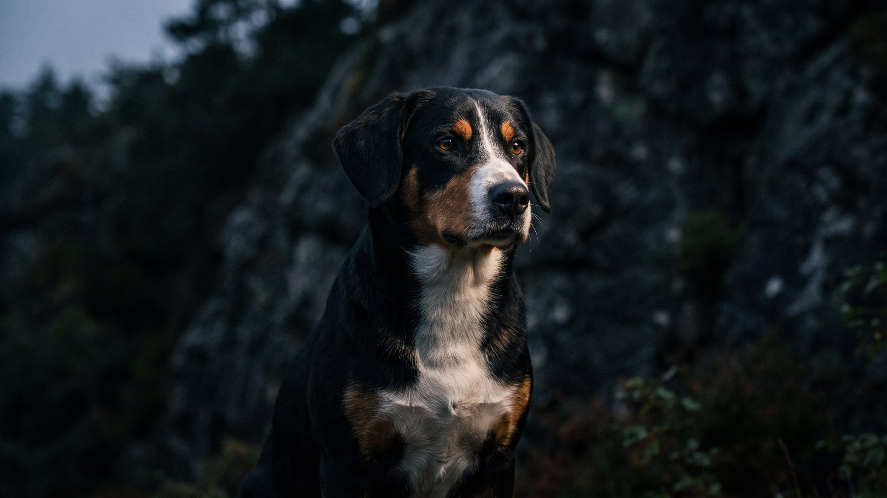

Энтлебухер зенненхунд весит 20-30 кг, но энергии в нём хватит на собаку вдвое крупнее. Самый маленький из четырёх швейцарских зенненхундов, он сотни лет гонял скот в альпийских долинах. Та же рабочая программа работает и сейчас: без настоящей нагрузки и задач для головы энтлебухер превращается в источник проблем. Вот что это значит на практике.
🐾 У вас энтлебухер зенненхунд?
AnimaLife соберёт уход под породу: к каким болезням есть склонность, что проверять по возрасту, чем кормить и когда пора к врачу. Бесплатно, прямо в мессенджере.
Собрать план ухода → Собрать в MAX →
У вас iPhone? AnimaLife есть в App Store
Энтлебухер зенненхунд деловой, быстро соображает и всегда занят каким-то делом. Если хозяин не даёт задание, собака придумает его сама: будет переставлять вещи, рыть, громко сообщать о каждом шорохе за дверью. Это не порок воспитания, а рабочий инстинкт.
С семьёй он привязан и активен, с детьми игривый, но может «пасти» их: подталкивать, забегать сбоку. Это норма для пастушьей собаки, которую стоит корректировать с щенячьего возраста. К чужим относится настороженно и всегда оценивает обстановку прежде, чем расслабиться.
Энтлебухер не диванная порода. Час прогулки в день ему мало, а унылое «выгулял-домой» он воспримет как сигнал развлечься дома самостоятельно.
Шерсть энтлебухера короткая, плотная, блестящая. Уход занимает минимум времени: щётка с жёсткой щетиной раз в неделю, в период линьки чаще, каждые 2-3 дня. Купают по мере загрязнения, от 1 раза в 1-2 месяца. Уши проверяют еженедельно, когти стригут раз в 3-4 недели.
При всей простоте ухода за шерстью этот пункт не компенсирует главное: не менее важно следить за состоянием суставов и весом, а для этого нужна регулярная нагрузка без перегрузки в щенячьем возрасте.
Энтлебухер зенненхунд хорошо поддаётся обучению, он любит работать вместе с хозяином. Занятия начинают с 8-10 недель: базовые команды, приучение к поводку, социализация в городе. Чем разнообразнее сценарии в щенячьем возрасте, тем устойчивее характер взрослой собаки.
Порода в целом здоровая, но склонна к дисплазии тазобедренных суставов. Нагрузку щенкам дозируют: длинные пробежки и прыжки с высоты до 12-18 месяцев ограничивают. Плановые осмотры у ветеринара раз в год помогают вовремя заметить изменения.
Материал носит информационный характер и не заменяет очную консультацию ветеринара.
🐾 Ваш питомец — энтлебухер зенненхунд?
Заведите профиль в AnimaLife: приложение запомнит породу, возраст и вес и будет подсказывать по уходу именно для неё. Вопросы AI-ветеринару — круглосуточно и бесплатно.
Завести профиль → Завести в MAX →
У вас iPhone? AnimaLife есть в App Store
🐾 Понравился разбор?
Подпишитесь на канал — каждый день разбираем по одному тревожному симптому у кошек и собак: что в пределах нормы, а когда пора к врачу. Подпишитесь, чтобы не пропустить разбор, который может спасти здоровье вашего питомца.